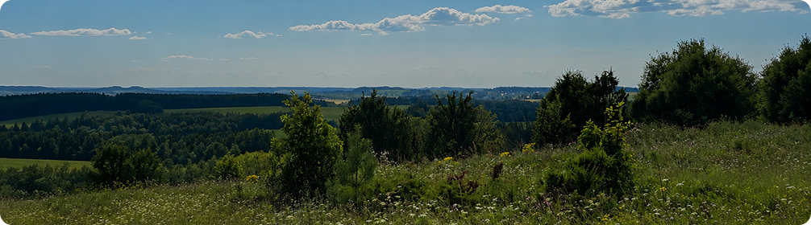
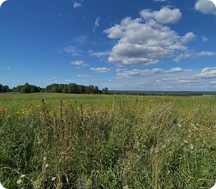
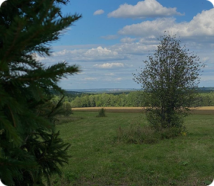
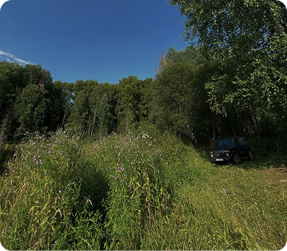
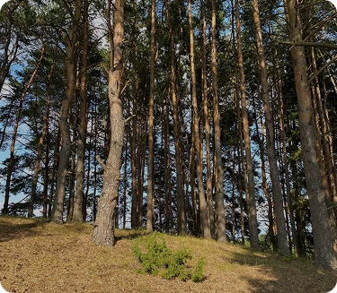
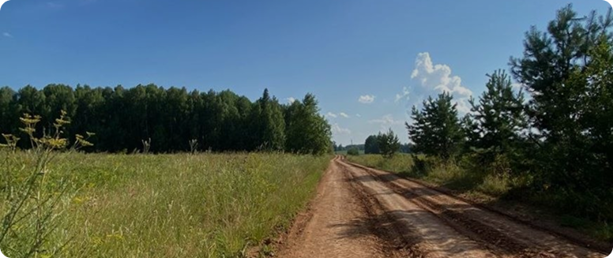

Первые уроки леса начинаются не с карты
Для многих людей лес начинается с навигатора, туристической тропы или маршрута выходного дня. Для Виктора Викторовича всё началось гораздо раньше — в детстве, когда бабушка брала его с собой за грибами и учила замечать то, на что большинство людей не обращает внимания.
Он до сих пор хорошо помнит свои первые походы. Не потому что тогда нашёл много грибов или встретил редких животных, а потому что именно в те годы начал понимать: лес нельзя просто пройти, его нужно наблюдать и постепенно учиться читать.
«Когда я с бабушкой ходил за грибами, она показывала, какие грибы можно собирать, а какие нельзя. Объясняла, какие бывают деревья и как ориентироваться в лесу. Помню, как однажды заблудился и вышел совсем в другую деревню»
Одним из самых запоминающихся уроков стала старая лесная примета, которой его научила бабушка ещё в детстве. За этим простым правилом скрывалась важная мысль: в лесу нельзя поддаваться панике и принимать решения наспех.
Лесная примета
Если человек чувствует, что начинает блуждать и теряет ориентиры, нужно остановиться возле дерева и три раза обойти его кругом
Сегодня Виктор Викторович воспринимает эту примету не как способ найти дорогу домой, а как напоминание о самом важном правиле леса — сначала успокоиться и осмотреться. Иногда лучший способ выбрать верное направление — перестать спешить и внимательно посмотреть на то, что тебя окружает.
Что помогает не потеряться в лесу
Остановитесь, если почувствовали, что потеряли направление
Не поддавайтесь панике и не пытайтесь искать выход наугад
Запоминайте заметные деревья, развилки и особенности рельефа
Начинайте знакомство с лесом на хорошо известных маршрутах
Постепенно увеличивайте расстояние и сложность прогулок

ПРОКАЧИВАЙ СВОИ НАВЫКИ
Как понять, что место будет грибным
Опытный грибник начинает искать грибы ещё до того, как увидит первый гриб. По словам Виктора Викторовича, хороший грибной участок можно определить по самому лесу — достаточно обратить внимание на влажность почвы, количество света и деревья вокруг.
Особенно перспективными считаются тенистые участки с мхом, где земля дольше сохраняет влагу. Белые грибы чаще встречаются в еловых лесах, а подосиновики — рядом с осинами. Не менее важно и расположение участка: северная и западная стороны леса обычно остаются более сырыми даже в тёплую погоду.
«Главное, чтобы место было сырое, тенистое и чтобы был мох. Тогда вероятность найти грибы намного выше»
Признаки хорошего грибного места
Ельник
Густые еловые леса создают тень и удерживают влагу
Мох
Показывает, что почва остаётся влажной
Сырость
Влажная земля создаёт хорошие условия для роста
Сторона
Северные и западные участки сохраняют влагу
Когда лес предупреждает о непогоде
По словам Виктора Викторовича, лес часто реагирует на перемену погоды раньше, чем это замечает человек. Меняется ветер, иначе начинают звучать деревья, а привычные лесные звуки становятся тише или, наоборот, заметно громче.
Особенно внимательно он советует наблюдать за птицами. Их поведение может подсказать приближение дождя или сильного ветра ещё до появления первых туч.
«Если вороны начинают собираться в стаи и шуметь — погода скоро изменится»
Со временем такие сигналы начинаешь замечать автоматически.
Как лес предупреждает о непогоде
Ветер
Становится сильнее или неожиданно меняет направление
Кроны
Верхушки деревьев начинают шуметь заметно громче
Птицы
Вороны собираются в стаи и ведут себя более беспокойно
Воздух
Становится тяжёлым, влажным, а лес выглядит темнее
Следы животных — это не только отпечатки
Когда говорят о следах животных, многие представляют отпечатки лап на снегу или сырой земле. Однако присутствие животных можно заметить не только по отпечаткам на земле.
О животных могут рассказать протоптанные тропы, раскопанная земля, сломанные ветки или неожиданное движение в кустах. По словам Виктора Викторовича, даже характер следов помогает понять, кто недавно проходил через этот участок леса.



Лисы обычно передвигаются более хаотично и редко придерживаются одного маршрута, поэтому их следы часто выглядят запутанными. Кабаны и барсуки, наоборот, предпочитают пользоваться постоянными тропами, которыми ходят из года в год.
На присутствие животных могут указывать и другие признаки. Раскопанная земля нередко остаётся после кормёжки кабанов, а сломанные ветки и примятая растительность говорят о том, что здесь недавно проходил крупный зверь.
«Если слышно сильный треск веток — скорее всего, рядом проходит крупное животное»
Со временем такие наблюдения складываются в целую картину. Лес начинает рассказывать свои истории не только через следы на земле, но и через всё, что происходит вокруг: звуки, тропы, состояние растений и едва заметные изменения в привычном пейзаже.
БОЛЬШЕ В ДЗЕНЕ
Главная ошибка городского человека
На вопрос о самых частых ошибках новичков Виктор Викторович отвечает неожиданно просто. По его словам, проблема не в том, что люди плохо знают лес или боятся диких животных. Гораздо чаще неприятности случаются из-за невнимательности.
В городской среде человек привыкает к ровным дорожкам и предсказуемому маршруту. В лесу всё иначе: под ногами могут оказаться корни деревьев, сухие ветки, скрытые ямы или скользкие участки земли.
«Часто люди запинаются, падают, получают травмы. Просто потому что не смотрят под ноги»
Опытный человек в лесу постоянно наблюдает за окружающей обстановкой. Он смотрит не только вперёд, но и под ноги, замечая изменения рельефа, препятствия и потенциально опасные места на пути.
5 советов для первого похода
Маршрут
Не уходите сразу в глубину леса. Начинайте знакомство с природой с опушки и хорошо знакомых троп
Внимание
Смотрите под ноги и обращайте внимание на окружающую обстановку. Большинство травм связано именно с невнимательностью
Защита
Надевайте закрытую одежду и заправляйте штаны в носки. Это поможет снизить риск встречи с клещами
Подготовка
Даже на короткую прогулку возьмите воду, небольшой перекус, нож и спички или зажигалку
Опыт
Первые походы лучше совершать вместе с человеком, который хорошо знает местность и сможет помочь сориентироваться
Собраться в лес без лишнего
По словам Виктора Викторовича, для прогулки по лесу не нужен тяжёлый туристический рюкзак или дорогое снаряжение. Гораздо важнее взять несколько базовых вещей, которые помогут чувствовать себя комфортно и безопасно.
Одежда
Закрытая одежда с капюшоном защищает от веток, насекомых и клещей
Обувь
Плотная и удобная обувь помогает избежать травм на неровной местности
Защита
Средства от комаров и клещей особенно важны в тёплое время года
Вода
Даже короткая прогулка может занять больше времени, чем планировалось
Спички
Небольшой запас на случай непредвиденной ситуации
Перекус
Шоколад, орехи или другой лёгкий источник энергии
Лес тогда и сейчас
По наблюдениям Виктора Викторовича, сам лес за последние десятилетия изменился не так сильно, как может показаться. Гораздо заметнее перемены в животном мире: некоторые виды стали встречаться чаще, а другие почти исчезли из привычных мест.
Сегодня в лесах Пермского края стало больше медведей, кабанов и бобров. В некоторых районах появились косули, которых раньше здесь практически не встречали.
Изменения заметны и среди птиц. Всё чаще можно увидеть лебедей и цапель там, где раньше они были редкими гостями.
«Раньше у нас лебеди не гнездились. Сейчас уже гнездятся»
При этом некоторые животные стали попадаться значительно реже. Например, волков, по словам Виктора Викторовича, сегодня встречают намного меньше, чем несколько десятилетий назад.


Что изменилось в лесах Пермского края
Медведи
встречаются чаще, чем раньше
Кабаны
активно осваивают новые территории
Косули
появились в районах, где раньше были редкостью
Бобры
заселили многие реки и ручьи
Лебеди и цапли
стали чаще гнездиться в регионе
Волки
встречаются значительно реже
Чему лес может научить человека
На вопрос о главном уроке леса Виктор Викторович отвечает не задумываясь: умению замечать и понимать окружающее пространство. Но речь идёт не только о том, чтобы найти дорогу домой или не заблудиться среди деревьев. Лес учит замечать то, что в городской жизни часто остаётся незамеченным.
Городской человек привык ориентироваться по улицам, зданиям и навигатору. В лесу приходится больше доверять собственной наблюдательности, запоминать приметные места и учиться чувствовать пространство вокруг себя.
За десятилетия, проведённые в лесу, Виктор Викторович пришёл к простому выводу: уверенность появляется не благодаря специальным навыкам или снаряжению, а благодаря опыту и внимательному отношению к природе.
«Без опытного человека соваться в лес неопытному городскому вообще не стоит»
Пожалуй, именно в этом и заключается главный урок леса. Он не любит спешки и не прощает невнимательности, но щедро делится знаниями с теми, кто готов наблюдать, учиться и уважать его правила.